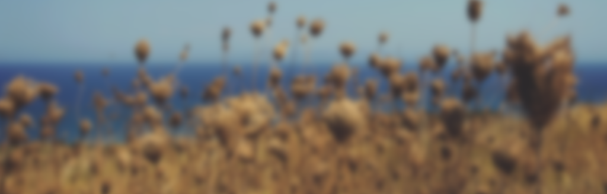

How did I develop iOS app
iOS app တစ်ခု ဖန်တီးခြင်း

ပြီးခဲ့တဲ့လက MYMC radio iOS app ကို သုံးကြည့်တာ သိပ်ပြီး အဆင်မပြေဘူး။ အဓိကတော့ design မလှတာရယ် album art မပါတာကြောင့် ကြည့်လို့ မကောင်းဘူး ဖြစ်နေတယ်။ နောက်ပြီးတော့ background မှာ run တဲ့ အခါမှာ Pause နဲ့ Play ပြန်လုပ်လို့ မရဘူး။ ဒါနဲ့ ကိုယ့်ဘာသာကိုယ် App တစ်ခုရေးမယ်ဆိုပြီး နားဆင် app ကို ရေးဖြစ်သွားတယ်။
App ကို စဖို့အတွက် ပထမဆုံး design ရေးဆွဲဖြစ်တယ်။ ဘယ်အချက်တွေကို လက်ရှိ app မှာ မကြိုက်ဘူးလဲဆိုတာ ချရေးဖြစ်တယ်။ နောက်ပြီးတော့ ဘယ်လိုမျိုး ပုံစံနဲ့ album art ပြမယ်။ design တွေကို Penultimate နဲ့ ချဆွဲကြည့်တယ်။ ဘယ်လို ပုံစံ နဲ့ အဆင်ပြေမလဲ ဆိုပြီးတော့။ Penultimate ကို Paper ထက်သဘောကျတယ်။ Paper က ကောင်းပေမယ့် ပုံစွဲတဲ့အခါမှာ လက်တင်ထားလို့ မရဘူး။ Penultimate က protect system က software level မှာ ပါတဲ့ အတွက် ပုံဆွဲရတာ ပိုအဆင်ပြေတယ်။ နောက်ပြီးတော့ Paper ကို သဘောမကျတာက backup မရှိတာပဲ။ iOS ကို restore ချလိုက်တော့ ဆွဲထားတဲ့ design တွေ အကုန်ပျောက်သွားပြီးကတည်းက paper ကို သိပ်မသုံးဖြစ်တော့ဘူး။

လက်နဲ့ အကြမ်းပြီးတာနဲ့ sketch နဲ့ Design ဆွဲတယ်။ Sketch design ဆွဲထားတာကို sketch mirror နဲ့ စမ်းတယ်။ သဘောကျပြီဆိုမှ iPhone app ကို စရေးဖြစ်တယ်။ Sketch Mirror က iPhone , iPad design အတွက် အတော်လေးကို အဆင်ပြေတယ်။ အခု mac မှာ ပြင်လိုက်တာကို ချက်ခြင်း iOS ဘက်မှာ update ဖြစ်တဲ့ အတွက် တကယ်လိုချင်တဲ့ အရွယ်အစား ပုံစံ အတိုင်း image တွေကို ဖန်တီးနိုင်ပါတယ်။

Desing ကို စဉ်းစားတော့ album art ကြီးနဲ့ ပုံမှန် သမာရိုးကျက ကြည့်မကောင်းဘူး။ ဒါနဲ့ album art နောက်တစ်ခုကို နောက်ခံထားပြီးတော့ blur လုပ်လိုက်တယ်။ အဲဒီမှာ ပြဿနာက စာလုံး အရောင်ပဲ။ အစက အဖြူရောင်ထားထားပေမယ့် အဖြူရောင်ပေါ်မှာ စာလုံး မမြင်ရဘူး။ ဘယ်လို မြင်ရအောင် ထားမလဲ စဉ်းစားရင်းနဲ့ iTunes ကို သတိရသွားတယ်။ iTunes မှာ သီချင်းခေါင်းစဉ် နောက်ပြီးတော့ background color က album art ပေါ်မှာ မူတည်ပြီး ပြသွားတာ။ ဒါနဲ့ အဲဒီ ပုံစံ အတိုင်း နားဆင် မှာ လုပ်ထားလိုက်တယ်။ Album art ရဲ့ ပုံပေါ်မှာ မူတည်ပြီးတော့ စာလုံး အရောင်ကို လိုက်ပြောင်းထားတယ်။

နောက်ထပ် ပြဿနာ တစ်ခုက album art မရှိ တဲ့ အခါ ဘယ်ပုံပြမလဲ ဆိုတာပဲ။ တခြား player တွေကို လိုက်ကြည့်တော့ ဘာမှ မပြတာ ရှိသလို logo ပြတာလဲ ရှိတယ်။ မြန်မာနိုင်ငံမှာ music album database API မရှိသေးဘူး။ ဒါမှမဟုတ် ကျွန်တော်ပဲ ရှာမတွေ့တာလား မသိဘူး။ အဲဒီ အတွက် wallpaper လှလှ လေးတွေ သုံးမယ်လို့ စဉ်းစားဖြစ်တယ်။ wallpaper ထည့်မယ်ဆိုရင် size ကြီးသွားမယ်။ ပုံတွေ ထပ်နေမယ်။ wallpaper မှာ သုံးခွင့်ရဖို့ license လိုအုံးမယ်။ ဒါနဲ့ပဲ ပုံမှန် လည်း update လုပ်တယ်။ လူတိုင်း ကြိုက်တဲ့ နေရာမှာ စိတ်ကြိုက်သုံးခွင့်ရှိတဲ့ unsplah က ပုံတွေ ယူပြီး ပြထားလိုက်တယ်။ English သီချင်းတွေကို iTunes API ကနေ album art ကို ယူပြထားပေးတယ်။

Design စဆွဲကတည်းက play , pause button ကို မထည့်ထားဘူး။ screen က tab လုပ်ထားတာနဲ့ toggle ဖြစ်အောင် လုပ်ထားတယ်။ design စဆွဲတုန်းက MYMC တစ်ခုအတွက်ပဲ။ နောက်မှ MYMC အပြင် အခြား online myanmar radio တွေ ရှိသေးတယ်ဆိုတာ သိတယ်။ ဒါနဲ့ design ထဲမှ fit မဖြစ်မဖြစ်အောင် ထည့်လိုက်ရတယ်။ Station ပြောင်းဖို့ကို station name သွားပြီးတော့ swipe လုပ်ရတယ်။ အခု ဒီစာရေးနေချိန်မှာတော့ Narsin version 1.1 ကို iOS app store ပေါ်မှာ မရသေးဘူး။ version 1.1 မှာ help screen ထည့်ထားပြီးတော့ left,right swipe လုပ်ပြီး radio station ကို ပြောင်းလို့ ရအောင် ပြင်ထားတယ်။ အသံပိုကြည်အောင် လည်း ပြန်ပြင်ထားတယ်။


အခု version မှာတော့ iPad အတွက် မရသေးဘူး။ iPad အတွက် ဘယ်လို design လုပ်ရင်ကောင်းမလဲ ဆိုတာ စဉ်းစားရအုံးမယ်။ လက်ရှိ design အတိုင်းပဲ ထားမလား။ ဒါမှမဟုတ် သီးသန့် design ပြန်ဆွဲရမလား ဆိုတာ မသိသေးဘူး။ iPhone design ကို ကြီးလိုက်တာမျိုးတော့ မလုပ်ချင်ဘူး။